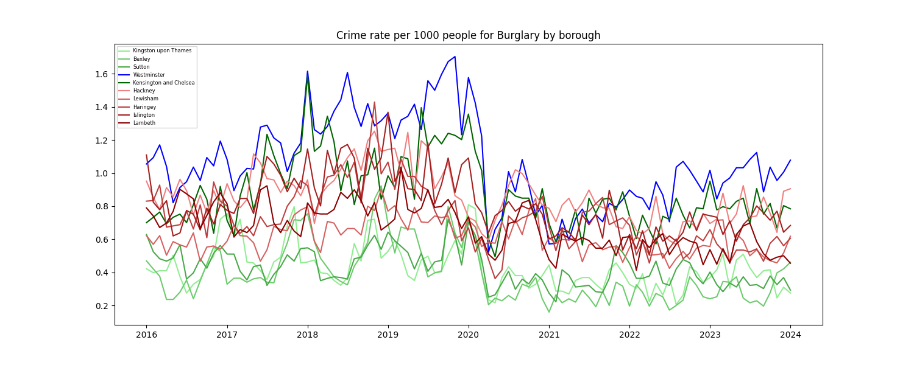
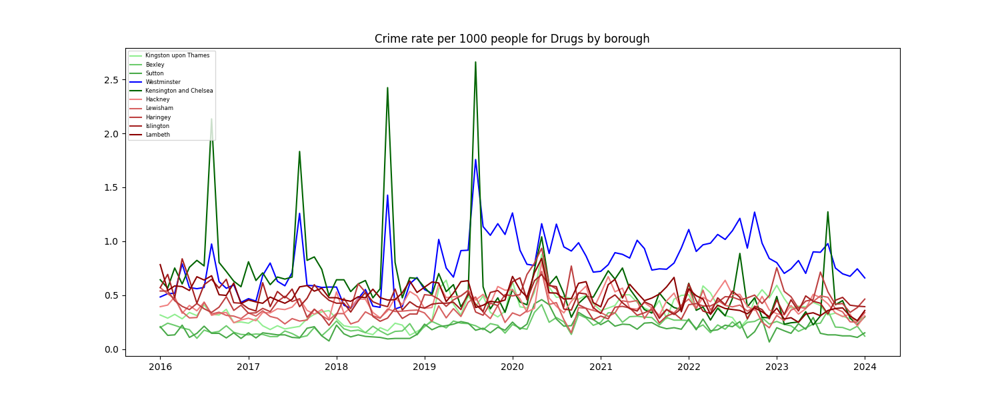
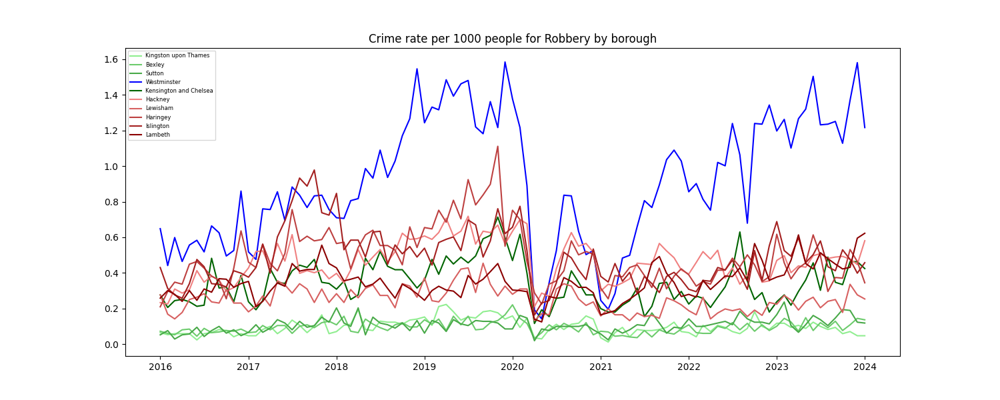
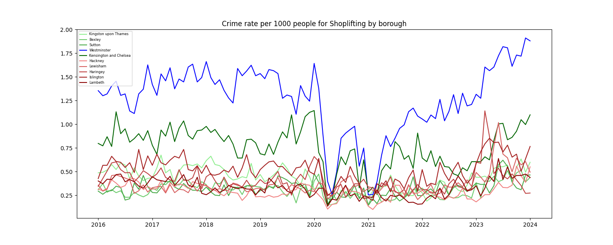

Anti-social behaviour Crime Rate

Bicycle theft Crime Rate

Burglary Crime Rate

Criminal damage and arson Crime Rate

Drugs Crime Rate

Other crime Crime Rate

Other theft Crime Rate

Possession of weapons Crime Rate

Public order Crime Rate

Robbery Crime Rate

Shoplifting Crime Rate

Theft from the person Crime Rate

Vehicle crime Crime Rate

Violence and sexual offences Crime Rate